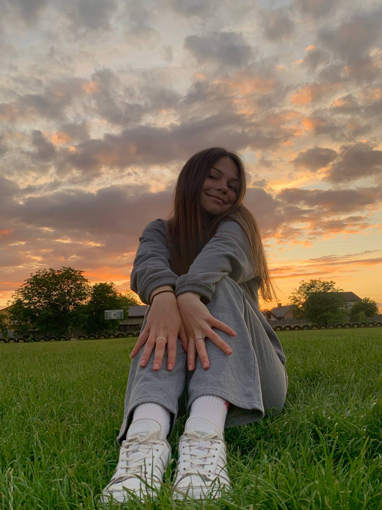

Які асоціації виникають у Вас, коли чуєте словосполучення “Львівський університет”?
Це університет, у якому я завжди хотіла вчитися, починаючи зі школи.
Я народилась у невеличкому містечку Львівської області смт.Гірник і та же вчилася в школі, а коли приїжала до Львова, то бачила
головний чудовий університет з ошатними колонами.Коли ще вчився в школі, університет асоціювався з доволі високою планкою, до якої
треба підтягнутися.